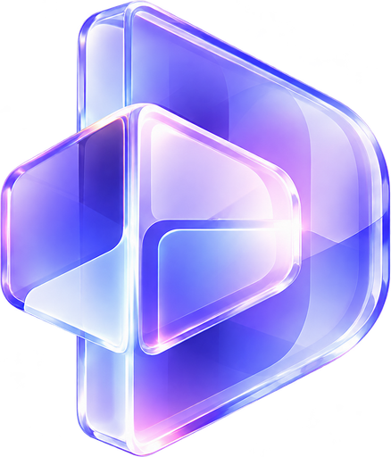
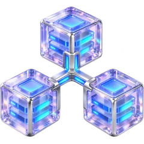

ИИ И АВТОМАТИЗАЦИЯ
ИИ и автоматизация бизнеса
ИИ-помощники, поиск по корпоративным знаниям и автоматизация процессов. Соединяем данные и сервисы, чтобы упростить ежедневную работу.

D-ArtАвтоматизируем процессы, обработку заявок и отчётность. Помогаем увеличивать продажи, снижать нагрузку на сотрудников и эффективнее управлять бизнесом.
Автоматизация бизнеса·ИИ-помощники·Цифровые продукты·Платформы и сайты
Больше возможностей для продаж, меньше ручной работы и больше контроля над процессами.
ИИ отвечает на типовые вопросы, фиксирует обращения и передаёт заявки менеджерам. Клиенты получают ответ быстрее, даже вне рабочего времени.
Автоматизируем подготовку отчётов и документов, перенос данных и повторяющиеся операции. Сотрудники уделяют больше времени важным задачам.
ИИ помогает не упускать обращения, вовремя возвращаться к клиентам и находить возможности для повторных продаж.
Данные из подключённых систем собираются в понятные отчёты. Руководитель быстрее видит отклонения и принимает решения.
ИИ помогает сотрудникам соблюдать стандарты, находить инструкции и быстрее решать типовые вопросы.

Объединяем учётные системы, телефонию, сайт, мессенджеры и клиентские базы в единый рабочий процесс.
Выберите знакомую ситуацию и посмотрите, как мы можем её решить.
Менеджеры получают десятки звонков и сообщений. Часть заявок теряется, ответы повторяются, CRM заполняется вручную.
ИИ помогает фиксировать обращения, готовить ответы, создавать задачи в CRM и напоминать о клиентах. Сложные вопросы передаются сотрудникам.
Обращения из подключённых каналов фиксируются, типовые вопросы обрабатываются быстрее, а менеджеры сосредоточены на продажах.
Руководители ждут отчёты, а сотрудники вручную собирают данные из таблиц, CRM, 1С и других систем.
ИИ собирает доступные данные, формирует управленческие сводки, выделяет отклонения и помогает находить причины изменений.
Актуальные показатели доступны руководителю без постоянного ручного сбора данных.
Сотрудники тратят время на поиск инструкций, регламентов, технической документации и ответов специалистов.
Корпоративный ИИ-помощник ищет информацию в документах, отвечает на вопросы и показывает источники ответов.
Сотрудники быстрее находят нужные инструкции и ответы, а эксперты тратят меньше времени на повторяющиеся вопросы.
Сотрудники вручную переносят данные, проверяют статусы, отправляют уведомления и контролируют повторяющиеся действия.
ИИ и интеграции автоматизируют типовые операции, контролируют выполнение задач и передают нестандартные ситуации ответственным сотрудникам.
Повторяющиеся действия выполняются автоматически, а нестандартные ситуации остаются под контролем сотрудников.
ЭКСПЕРТИЗА D-ART
От ИИ-помощников до полноценных цифровых платформ — разрабатываем решения под задачи вашего бизнеса.
ИИ-помощники, поиск по корпоративным знаниям и автоматизация процессов. Соединяем данные и сервисы, чтобы упростить ежедневную работу.
От выразительного сайта до цифровой платформы: интерфейсы, личные кабинеты и сервисы для ваших клиентов.
Боты и мини-приложения для общения, продаж и поддержки. Платежи, подписки и интеграции в привычном интерфейсе.
Финансовые сервисы, торговые платформы и блокчейн-инфраструктура для цифровой экономики.
КАК МЫ РАБОТАЕМ
Изучаем вашу задачу, предлагаем решение, разрабатываем и внедряем его в работу компании. После запуска остаёмся на связи.
Создаём собственные продукты, разрабатываем корпоративные системы и предлагаем ИИ-решения для повседневных задач бизнеса.
Экосистема ИИ-инструментов для самопознания: Собеседник, Нумеролог, Таролог и Астролог.
Разработали платформу с нуля: сайт с более чем 150 страницами, архитектуру, ИИ-модули, базы знаний, приложения для телеграм и макс, систему платежей и персональные сценарии.
Корпоративная система поиска и ответов на основе технической документации 1С:Отель. Использует RAG — подход, при котором ИИ находит материалы в базе знаний и опирается на них при подготовке ответа.
ИИ помогает быстро находить нужную техническую информацию, отвечает на сложные вопросы с опорой на документацию и поддерживает специалистов в рабочих процессах. Решение ориентировано на компании с большим объёмом корпоративных знаний и сложными информационными системами.
Помощник для контроля бизнес-процессов, анализа показателей и подготовки информации для управленческих решений.
Объединяет данные из CRM, 1С, таблиц и внутренних систем компании. Автоматически формирует управленческие отчёты, отслеживает ключевые показатели, выявляет отклонения и уведомляет о важных событиях. Помогает руководителю быстрее получать информацию и контролировать работу бизнеса.
ИИ-помощник для общения с клиентами и обработки входящих заявок.
ИИ обрабатывает обращения из мессенджеров, сайта и подключённых каналов связи, отвечает на типовые вопросы, помогает квалифицировать клиентов и автоматически передаёт данные в CRM. Контролирует статусы обращений, формирует задачи и напоминает менеджерам о необходимых действиях. Помогает сократить время обработки заявок и снизить нагрузку на отдел продаж.
ВОПРОСЫ И ОТВЕТЫ
О том, как оцениваем задачи,
запускаем и развиваем решения.
Стоимость зависит от задачи, объёма данных, интеграций и требований к качеству. После обсуждения проекта определяем объём работ и готовим оценку. Расходы на модели и инфраструктуру учитываем отдельно.
Сроки зависят от сложности решения, готовности данных и доступов к системам. После уточнения требований согласуем этапы, состав первой версии и ориентировочный график.
Да. Сначала изучаем текущий процесс, его ограничения и ручные операции. Затем определяем, где автоматизация полезна, а где необходим контроль человека, и предлагаем подходящий сценарий.
Да, если системы позволяют обмениваться данными через программные интерфейсы или другие доступные способы. До начала работ проверяем техническую совместимость, права доступа и требования к безопасности.
Да. Выделяем ключевой сценарий и собираем минимальную рабочую версию, чтобы проверить идею на практике. Заранее согласуем функции, ограничения и критерии результата.
Можем сопровождать решение, исправлять ошибки и развивать функциональность. Объём поддержки, сроки реакции и условия согласуем отдельно. При необходимости подготовим проект к передаче вашей команде.
ОТ ИДЕИ К РЕШЕНИЮ
Не обязательно разбираться в искусственном интеллекте. Расскажите, что хотите улучшить в бизнесе, — мы предложим, как это можно реализовать, и оценим стоимость и сроки.